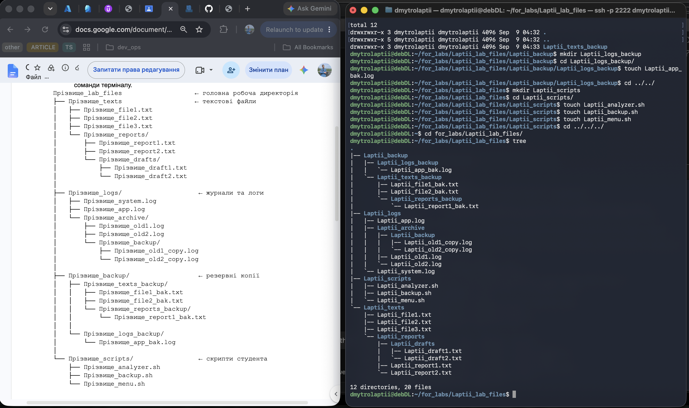

15. Документування роботи
Виконання основних етапів лабораторної роботи задокументовано за допомогою записів термінальної сесії asciinema.


VirtualBox було встановлено на macOS через Homebrew:
brew install --cask virtualboxАрхітектуру хост-системи було перевірено командою:
uname -m
Результат: arm64.
Віртуальну машину було створено та налаштовано через
консольну утиліту VBoxManage.
VBoxManage createvm \
--name "Debian13-DL-Labs" \
--ostype Debian13_arm64 \
--platform-arch=arm \
--register
VBoxManage modifyvm "Debian13-DL-Labs" \
--memory 4096 \
--cpus 2Для VM також було створено віртуальний диск, SATA-контролер, підключено ISO-образ Debian та налаштовано EFI-завантаження.
Оскільки Mac використовує архітектуру arm64,
було обрано Debian для ARM64.
Доступні типи Debian у VirtualBox було перевірено командою:
VBoxManage list ostypes --platform-arch=arm | grep -i debian
Для віртуальної машини було обрано:
Debian13_arm64.
Для встановлення використано образ
debian-13.6.0-arm64-netinst.iso.
Створення заданої структури каталогів та файлів, запис тексту у файли, виведення їхнього вмісту та об'єднання трьох текстових файлів у один.
До Laptii_file1.txt додано 10 рядків мовою C++.
За допомогою grep виконано пошук рядків зі словом
«файл» та пошук файлів, які містять це слово.
Виконано копіювання Laptii_all.txt у каталог резервних
копій, переміщення Laptii_file3.txt та перейменування
Laptii_file2.txt у second.txt.
Виведено список файлів каталогу
Laptii_texts_backup та записано його у
Laptii_files_list.txt.
Після виконання всіх операцій фінальну структуру каталогів
та файлів виведено командою tree.
Виконання основних етапів лабораторної роботи задокументовано за допомогою записів термінальної сесії asciinema.
